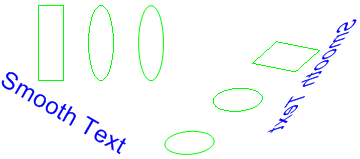

Практическое руководство. Поворот, отражение и наклон изображений
Поворот, отражение и наклон образ, указав конечные точки для верхнего левого, правого верхнего и левого нижнего углов исходного изображения. Три конечные точки определяют аффинное преобразование, которое сопоставляет исходное прямоугольное изображение в параллелограмм.
Пример
Предположим, например, исходный образ представляет собой прямоугольник с верхнего левого угла в (0, 0), правом верхнем углу на (100, 0) и в левом нижнем углу в (0, 50). Теперь допустим, эти три точки в конечные точки следующим образом.
| Исходная точка | Конечная точка |
|---|---|
| Верхний левый угол (0, 0) | (200, 20) |
| Верхний правый угол (100, 0) | (110, 100) |
| Нижний левый угол (0, 50) | (250, 30) |
Ниже показан исходный образ и образ в параллелограмм. Исходное изображение были неравномерным, отражаются, (повернутый) и перевода. Ось x вдоль верхней границы исходного изображения сопоставляется строку, которая выполняется через (200, 20) и (110, 100). Ось y — вдоль левого края исходного изображения сопоставляется строку, которая выполняется через (200, 20) и (250, 30).

На следующем рисунке показано, как преобразование, примененное к фотографии:

На следующем рисунке показано такое же преобразование, примененное к метафайлу:

В следующем примере создается изображения, показанные на первом рисунке.
Point[] destinationPoints = {
new Point(200, 20), // destination for upper-left point of
// original
new Point(110, 100), // destination for upper-right point of
// original
new Point(250, 30)}; // destination for lower-left point of
// original
Image image = new Bitmap("Stripes.bmp");
// Draw the image unaltered with its upper-left corner at (0, 0).
e.Graphics.DrawImage(image, 0, 0);
// Draw the image mapped to the parallelogram.
e.Graphics.DrawImage(image, destinationPoints);
Компиляция кода
Предыдущий пример предназначен для работы с Windows Forms и требует PaintEventArgse, который является параметром Paint обработчик событий. Не забудьте заменить Stripes.bmp с путем к изображению, который действителен в вашей системе.